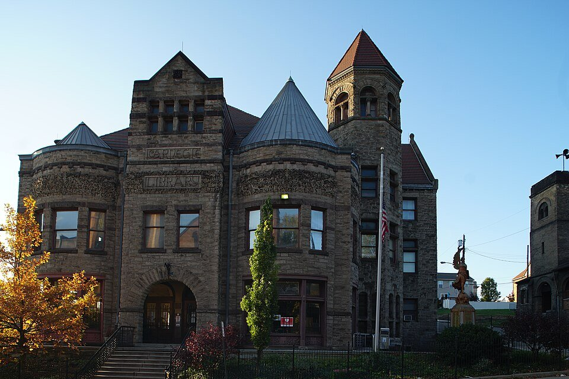
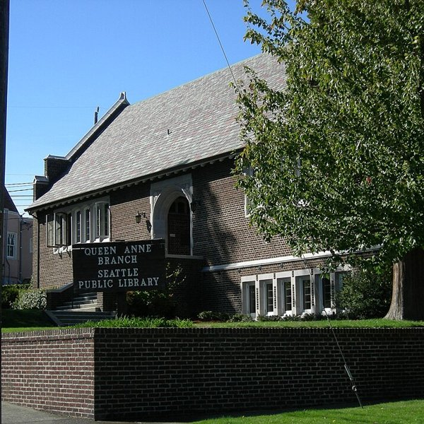

L2–L3 · Flow and Positioned Relationships
A gift that has conditions

Close to Carnegie's home, was where he first began giving. The first library he opened was in 1883 in Dunfermline Scotland. This was the town he was born. And the first opened in the United States was in Braddock Pennsylvania next to one of his steel mills. For years the grants were mainly being given to places with a personal connection. With nine of the thirteen US libraries being in the Pittsburgh area.
This began to change around the turn of the century when women's clubs were beginning to organize to found community libraries. With few public libraries having buildings of their own, requests were arriving faster than any one in office could answer them. The towns began offering many kinds of reasons. One claimed they wanted an alternative to its saloons while another could not stand a rival town had aa library and they did not.
The way he answered this issue was through a formula. James Bertram, his secretary at the time, sent all of the applicants a "Schedule of Questions" about the population, existing library, and whether it was owned a site. In order for them to be able to receive a grant, the towns had to supply the land, run the library with public money, and budget ten percent of the construction cost every year for operations. Laslty they must offer the service free to everyone.
“An endowed institution is liable to become the prey of a clique.”
This ten percent rules that he created began turning into a civic commitment for the towns. A town that would accept the 10,000 dollars for a building, was promising 1,000 dollars a year, every year, out of the locals taxes. Carnegie argued that making them pay for it would allow them to appreciate it more and defend it more. Compared to just getting it for free.
L4–L5 · Layers, Shapes, and Fallback
Climbing toward the light

Carnegie did not dictate a style. The local communities chose a wide array of different ornmaments and decorations. Beaux Arts to Spanish Colonial, they used many different styles. Despite this, the buildings still shared a particular look. The entrance was raised and reached by a staircase from the street, and a climb meant to suggest a person rising through learning.
Many older libraries began having closed-stack systems. Which meant that books would be retrieved from the stacks by staff. However,, the new Carnegie libraries had ‘free access’ meaning that the public could look at the books on the shelves. The Lawrenceville branch in Pittsburgh was the first library in the world to have a room dedicated to children.
Having light in the rooms was also a needed requirement. At the Carnegie branch of Seattle's Queen Anne neighborhood there were two story windows that filled almost half of all the gable wall. THey would pour daylight into the reading rooms at both ends. Small corbels along the center of the corridor were also carved with "LUX", which is latin for light.
Who the light reached
The promise of having free service to all had limits however. Due to segregation, Black residents were unable to be in public libraries in the South and were barred. Rather then insisting on integration, Carnegie funded seperate buildings like the Colored Carnegie Library in Houston for them. In Savannah Georgie a group of Black residents raised money and collected enough books to get their own library which opened in 1914.
Critics have been questioning the gifts since the start. As some saw the offers as insults to towns who were able to fund their own public works. While others called the library campaign an attempt at social control. Mark Twain accused Carnegie of buying fame and Carnegie's own steelworkers even argued that the money should be spent on their own working conditions seeing as how bad they were.
Ultimately however, the formula created its own strain. Small towns frequently struggled to keep up the annual appropriation and the burden began to become the most common complaint.
Still standing
Most of the buildings outlasted the arguments though. A 1992 survey by George Bobinski found 1,554 of the 1,681 original U.S. Carnegie buildings still standing. And 911 of them are still in use as real libraries. Hundreds of others have become museums, community centers, offices, and even homes.
Their survival was a test of the bargain that Carnegie set for the small towns. A building is a one time gift however the renewing budget, taxation, and reading room stay for centuries. The stone steps and lanterns still mark the gift, however hte lights inside stayed on from the towns own ahrd work.